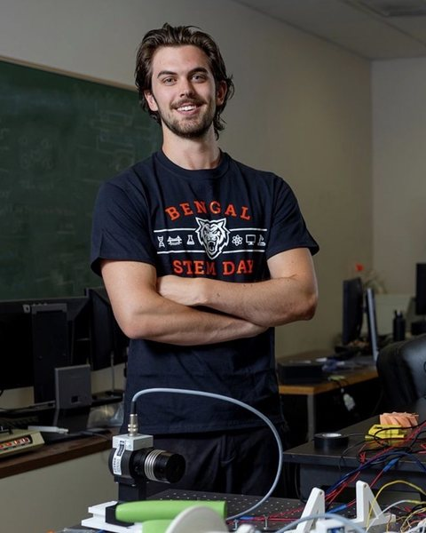

Research Interests
Bio
Christian Done studies Artificial Intelligence at Idaho State University. His research is AI and physics-informed digital twins for energy and propulsion systems. At the Measurements & Control Engineering Research Center, under Dr. Marco Schoen, he built a physics-informed neural network twin of a micro-turbojet engine that runs as an open-loop simulator of the engine's dynamics from fuel flow alone. In the ISU Office of Research, under Dr. Mustafa Mashal, he writes data acquisition software and machine learning models for structural load testing.
He is first author of a peer-reviewed paper on reinforcement learning for prosthetic hand control in a virtual environment (Virtual Worlds, 2025), and he studies adaptive damping in PageRank with Dr. Yunrong Zhu. A 2025 DOE Nuclear Energy University Program scholarship drew him toward nuclear systems, where he wants to apply the same physics-informed methods. He plans to pursue a PhD in engineering, mathematics, or physics, and he works through derivations and builds on his YouTube channel, Unreasonable Precision.
Clubs
- PresidentAI Club, Idaho State University
- PresidentMCERC Club, Idaho State University
- PresidentKinematica, Idaho State University
Selected Publication
- Reinforcement Learning-Driven Prosthetic Hand Actuation in a Virtual Environment Using Unity ML-Agents. Virtual Worlds, 2025. First author.
Contact
- Emailcontact@cjdone.dev
- LinkedInLinkedIn
- GitHubgithub.com/cjslayer
- YouTube@UnreasonablePrecision